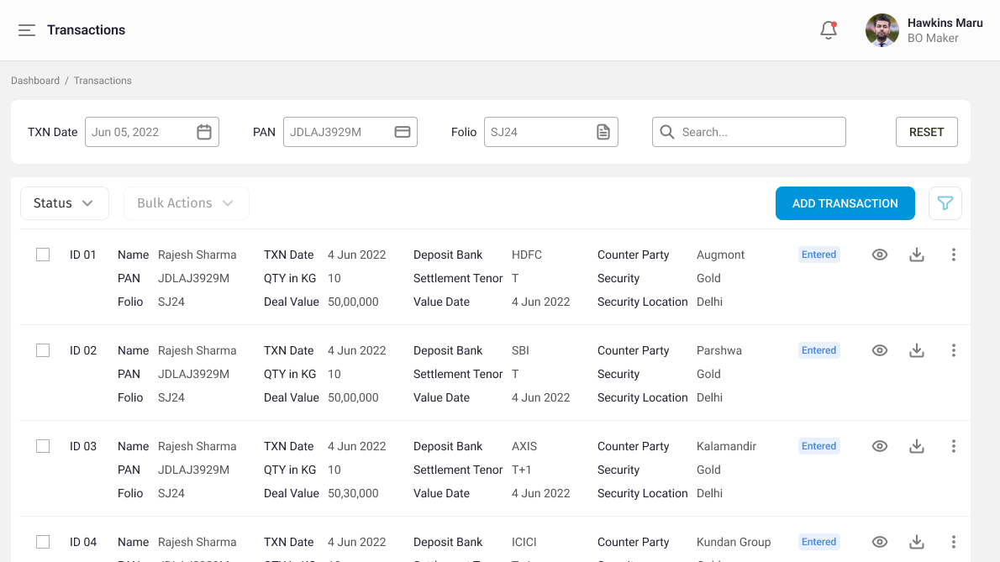
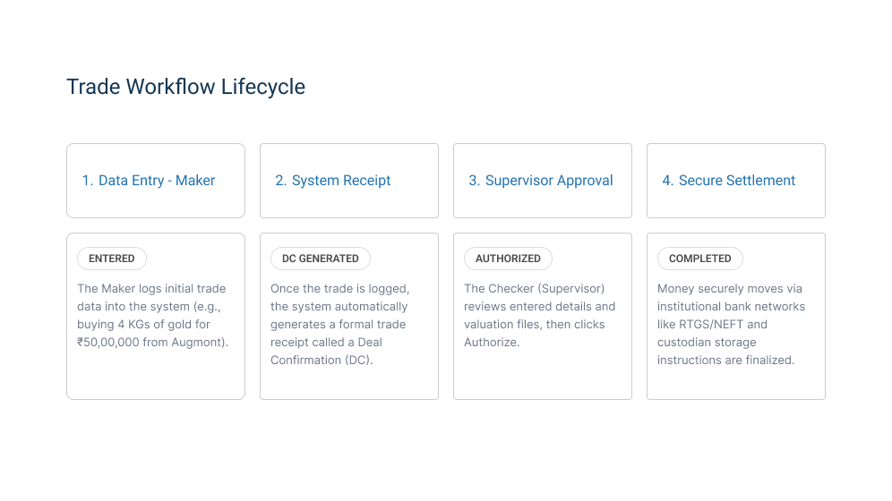
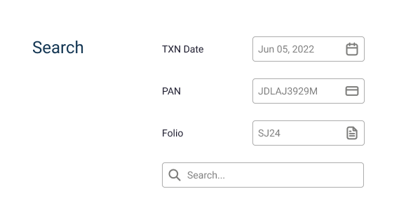

Designing the institutional control room for Gold ETF primary market operations.
A deep dive into building a high-density, error-proof back-office platform for XBI Mutual Fund to manage multi-crore physical-to-digital creation workflows.
Note: Client name has been anonymized to XBI Mutual Fund to comply with NDA terms. UI details and workflows have been generalized while preserving core institutional product logic.

What does this application actually do?
When retail investors buy units of a Gold ETF on public stock exchanges like the NSE or BSE, they see a simple broker interface. However, those digital units must be backed entirely by real, physical gold stored securely in certified vaults.
This application is the Primary Market Operations Portal—the private back-office control room used by the fund house (XBI Mutual Fund) and institutional Authorized Participants (such as Rakesh Sharma). It bridges the wholesale physical bullion market and the digital exchange.
Operators use this system to record, verify, and settle massive creation transactions—such as procuring kilograms of physical gold from wholesale refiners (like Augmont or Parshwa), coordinating split-bank RTGS payments across institutions like HDFC, Axis, and ICICI, and generating vault storage instructions.
How an institutional investor trade is executed
Transactions in the primary market involve high capital volumes and require a strict, multi-step governance model to prevent multi-crore errors. The workflow follows a strict maker-checker framework:
1. The Maker (Data Entry): An institutional operations user (e.g., Hawkins Maru, logged in as BO Maker) records the transaction details submitted by an Authorized Participant like Rakesh Sharma. This includes mapping the PAN (e.g., DJLAJ3929M), Folio (e.g., SJ24), exact weight in kilograms (e.g., 10 KG), deal value (e.g., ₹50,00,000), deposit bank, and counterparty refiner.
2. System Deal Confirmation (DC): Upon successful entry, the system automatically tags the record with an Entered status and generates internal compliance documentation.
3. The Checker (Authorization): A senior supervisor reviews the multi-leg bank routing and vault details, then authorizes the record so money can safely transfer via RTGS and physical bullion can be credited to the vault.

Granular search for complex data audits
Operations teams do not browse data casually; they look up exact records under tight compliance deadlines. At the top of the dashboard, I designed a multi-parameter filtering toolbar built specifically for institutional identifiers.
Key filter attributes built into the toolbar:
- TXN Date Picker: Instantly isolates deals executed on a specific calendar date (e.g., Jun 05, 2022).
- PAN Input Field: Directly queries permanent account numbers (e.g., DJLAJ3929M) to track specific institutional entities.
- Folio Input Field: Filters portfolio ledger accounts (e.g., SJ24) to track ongoing allocations.
- Global Search & Reset: Allows free-text searching across names and IDs with a quick-reset action to clear query parameters instantly.

Engineering high data density into a single row
In enterprise portals, forcing operators to click into individual rows just to see basic details creates massive workflow friction. I designed a structured grid card layout within each table row that packs critical financial data into a clean, scannable format.
Anatomy of a single record row:
- Identifiers: Transaction ID (e.g., ID 01, ID 02) paired with the investor's name (Rakesh Sharma), PAN, and Folio number stacked neatly on the left.
- Financial & Operational Core: Clear breakdown of transaction dates, exact quantities in kilograms (e.g., 10 KG), total deal values in INR, settlement tenors (T or T+1), and value dates.
- Banking & Logistics: Explicit display of the deposit bank used (HDFC, SBI, AXIS, ICICI), counterparty wholesale refiner (Augmont, Parshwa, Kalamandir, Kundan Group), security type (Gold), and vault storage location (Delhi).
- Status & Inline Actions: A prominent status badge (Entered)
accompanied by a set of quick-action icons on the far right:
Eye Icon: for quick-preview;
Download Icon: Instantly fetches the generated Deal Confirmation (DC) or RTGS document without navigating away;
Three-Dot Menu: Opens context-aware secondary actions (such as email dispatch or audit logs).
State-governed bulk actions for institutional scale
Handling dozens of multi-lakh trades individually causes severe operational bottlenecks. To solve this, I designed a batch-processing controls menu allowing operators to select multiple rows via checkboxes to execute administrative batch commands—such as bulk RTGS payment letter generation and document exports. Crucially, mass-authorization was intentionally excluded from bulk controls to preserve strict Maker-Checker compliance; high-risk approvals must always be performed on an individual, case-by-case basis to prevent multi-crore errors.
To eliminate compliance risks, these administrative bulk operations are strictly state-governed. Operators must ensure selected rows share an identical lifecycle state (such as strictly Entered status) before generating batch paperwork. If mixed or ineligible states are detected, the system safely blocks batch generation, ensuring documents are only exported for transactions matching the precise stage required.
Checkbox multi-select
Enables instant batch selection across structured rows for simultaneous processing.
State validation gating
Prevents accidental batch execution on mixed-status rows to maintain strict regulatory compliance.
Inline shortcuts
Provides rapid document generation via row-level download icons without extra page navigation.
A controlled, high-efficiency control room
The final design successfully replaces heavy, error-prone manual spreadsheets with a structured, enterprise-grade operations platform.
By combining advanced metadata search tools, information-rich row cards with instant download utilities, and strict state-gated bulk workflows, XBI Mutual Fund’s operations team can now process high-value primary market transactions with absolute clarity, speed, and regulatory confidence.